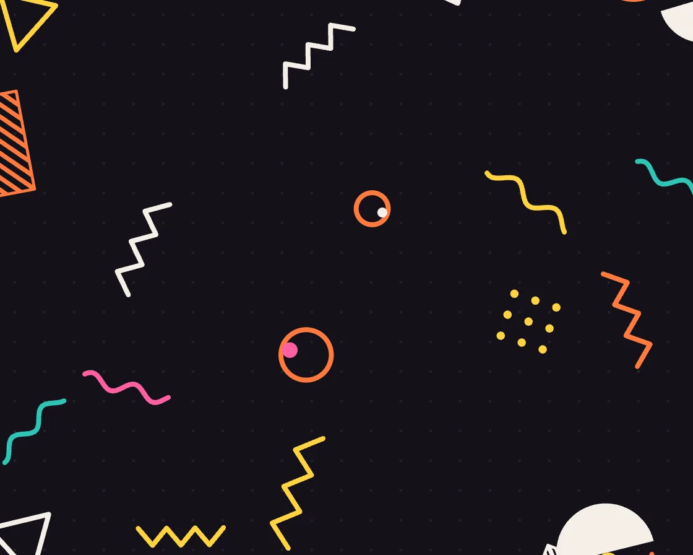

Memphis pattern
Memphis pattern is a Canvas effect: jittered-grid confetti of Memphis shapes, wrapping seamlessly in three parallax layers. One plain JavaScript file with no dependencies; add it with npx motion-library add memphis.

Open it live, tune it and copy the code
What is Memphis pattern?
Memphis squiggles, zigzags and dots drift over a dark ground; the pointer shifts three depth layers.
How does Memphis pattern work?
Shapes are dealt one per jittered grid cell so they never clump, and positions wrap by modulo over a span wider than the stage.
How do I add Memphis pattern to my website?
- In your project folder, run
npx motion-library add memphis. It writesanimations/memphis.js. Needs Node 18 or newer. - Import it and call it with a container element that has a size:
import fx from './animations/memphis.js'; const stop = fx(document.querySelector('#hero')); - Call
stop()to clean up, for example when a component unmounts.
Every setting below is also a flag, so you can install it already tuned: npx motion-library add memphis --density 2.5.
What settings can I tweak?
| Setting | Flag | Default | Range | Step |
|---|---|---|---|---|
| Density | --density | 1 | 0.4 to 2.5 | 0.05 |
| Speed | --speed | 1 | 0 to 3 | 0.05 |
| Stroke (px) | --stroke | 4 | 1.5 to 8 | 0.5 |
Specifications
- Renderer
- Canvas 2D
- Category
- Generative & math
- Dependencies
- None
- File size
- 5.5 KB, unminified
- Interactive
- Yes: it responds to the pointer
- Reduced motion
- Respects prefers-reduced-motion
- Licence
- MIT-0: use it anywhere, no credit needed
Source code
// Memphis pattern: the 1980s Milan design group’s vocabulary (squiggles, zigzags, confetti dots, outlined
// triangles, half-moons and striped bars) drifting and turning over a dark ground. Shapes are dealt by a
// jittered grid so they never clump, each wraps seamlessly at the edges, and the stroke weight is the same for all.
const PARAMS = { density: 1, speed: 1, stroke: 4 };
export default function (stage) {
const canvas = document.createElement('canvas');
canvas.style.cssText = 'position:absolute;inset:0;width:100%;height:100%;display:block;touch-action:none';
stage.append(canvas);
const ctx = canvas.getContext('2d');
const reduce = matchMedia('(prefers-reduced-motion: reduce)').matches;
let W = 0, H = 0, D = 1, items = [];
const COLS = ['#ff5fa2', '#2ec4b6', '#ffd23f', '#3a86ff', '#f4efe6', '#ff7a3d'];
const KINDS = ['squiggle', 'zigzag', 'dots', 'tri', 'moon', 'stripes', 'ring', 'squiggle', 'zigzag', 'cross'];
const rnd = (a, b) => a + Math.random() * (b - a);
function deal() {
items = [];
const cell = 132 / Math.sqrt(PARAMS.density);
const nx = Math.ceil(W / cell) + 2, ny = Math.ceil(H / cell) + 2;
for (let j = 0; j < ny; j++) for (let i = 0; i < nx; i++) {
const kind = KINDS[Math.random() * KINDS.length | 0];
const big = /moon|ring|tri|stripes/.test(kind) && Math.random() < .3; // a few bold anchors among the confetti
items.push({ kind, x: (i + rnd(.15, .85)) * cell, y: (j + rnd(.15, .85)) * cell, s: rnd(30, 50) * (kind === 'dots' ? 1.2 : 1) * (big ? 1.9 : 1),
a: rnd(0, 6.28), va: rnd(-.5, .5), vx: rnd(-10, 10), vy: rnd(6, 16), c: COLS[Math.random() * COLS.length | 0], c2: COLS[Math.random() * COLS.length | 0], ph: rnd(0, 6.28) });
}
items.span = [nx * cell, ny * cell];
}
const resize = () => { D = Math.min(devicePixelRatio, 2); W = stage.clientWidth || 1; H = stage.clientHeight || 1; canvas.width = W * D | 0; canvas.height = H * D | 0; deal(); };
const ro = new ResizeObserver(resize); ro.observe(stage); resize();
function shape(o, t) {
const s = o.s, lw = PARAMS.stroke;
ctx.lineWidth = lw; ctx.lineCap = 'round'; ctx.lineJoin = 'round'; ctx.strokeStyle = o.c; ctx.fillStyle = o.c;
ctx.beginPath();
switch (o.kind) {
case 'squiggle': { // the wave itself undulates: phase runs along the stroke
for (let k = 0; k <= 28; k++) { const u = k / 28, x = (u - .5) * s * 2.2, y = Math.sin(u * 12.5 + t * 2.4 + o.ph) * s * .16; k ? ctx.lineTo(x, y) : ctx.moveTo(x, y); }
ctx.stroke(); break; }
case 'zigzag': for (let k = 0; k <= 6; k++) { const x = (k / 6 - .5) * s * 2, y = (k % 2 ? -1 : 1) * s * .2; k ? ctx.lineTo(x, y) : ctx.moveTo(x, y); } ctx.stroke(); break;
case 'dots': for (let a = 0; a < 3; a++) for (let b = 0; b < 3; b++) { ctx.moveTo((a - 1) * s * .42 + 3.4, (b - 1) * s * .42); ctx.arc((a - 1) * s * .42, (b - 1) * s * .42, 3.4, 0, 7); } ctx.fill(); break;
case 'tri': ctx.moveTo(0, -s * .6); ctx.lineTo(s * .55, s * .4); ctx.lineTo(-s * .55, s * .4); ctx.closePath(); ctx.stroke(); break;
case 'moon': ctx.arc(0, 0, s * .55, 0, Math.PI); ctx.closePath(); ctx.fill();
ctx.fillStyle = o.c2 === o.c ? '#f4efe6' : o.c2; ctx.beginPath(); ctx.arc(0, -s * .12, s * .12, 0, 7); ctx.fill(); break;
case 'stripes': ctx.save(); ctx.beginPath(); ctx.rect(-s * .7, -s * .3, s * 1.4, s * .6); ctx.clip();
ctx.beginPath(); for (let k = -6; k <= 6; k++) { ctx.moveTo(k * s * .2 - s * .4, s * .4); ctx.lineTo(k * s * .2 + s * .4, -s * .4); } ctx.lineWidth = lw * .9; ctx.stroke(); ctx.restore();
ctx.beginPath(); ctx.rect(-s * .7, -s * .3, s * 1.4, s * .6); ctx.lineWidth = lw * .6; ctx.stroke(); break;
case 'ring': ctx.arc(0, 0, s * .42, 0, 7); ctx.stroke(); ctx.beginPath(); ctx.fillStyle = o.c2; ctx.arc(s * .2, -s * .2, s * .13, 0, 7); ctx.fill(); break;
case 'cross': ctx.moveTo(-s * .3, 0); ctx.lineTo(s * .3, 0); ctx.moveTo(0, -s * .3); ctx.lineTo(0, s * .3); ctx.stroke(); break;
}
}
let px = 0, py = 0, tpx = 0, tpy = 0;
const move = e => { const r = stage.getBoundingClientRect(); tpx = ((e.clientX - r.left) / r.width - .5) * 2; tpy = ((e.clientY - r.top) / r.height - .5) * 2; };
const leave = () => { tpx = tpy = 0; };
stage.addEventListener('pointermove', move); stage.addEventListener('pointerleave', leave);
let raf, last = performance.now(), T = 0;
function frame(now) {
const dt = Math.min(.05, (now - last) / 1000); last = now;
T += dt * (reduce ? 0.05 : PARAMS.speed);
px += (tpx - px) * .06; py += (tpy - py) * .06;
ctx.setTransform(D, 0, 0, D, 0, 0);
ctx.fillStyle = '#141119'; ctx.fillRect(0, 0, W, H);
// a faint dot grid behind, like a Memphis laminate
ctx.fillStyle = 'rgba(244,239,230,.07)';
for (let y = 12; y < H; y += 24) for (let x = 12; x < W; x += 24) ctx.fillRect(x - 1, y - 1, 2, 2);
const [sw, sh] = items.span;
for (let k = 0; k < items.length; k++) {
const o = items[k], depth = .5 + (k % 3) * .25; // three depth layers react to the pointer by different amounts
let x = (o.x + o.vx * T - px * 26 * depth) % sw, y = (o.y + o.vy * T - py * 20 * depth) % sh;
if (x < 0) x += sw; if (y < 0) y += sh; x -= o.s * 1.6; y -= o.s * 1.6;
ctx.setTransform(D, 0, 0, D, x * D, y * D); ctx.rotate(o.a + o.va * T);
shape(o, T);
}
raf = requestAnimationFrame(frame);
}
raf = requestAnimationFrame(frame);
return () => { cancelAnimationFrame(raf); ro.disconnect(); stage.removeEventListener('pointermove', move); stage.removeEventListener('pointerleave', leave); canvas.remove(); };
}